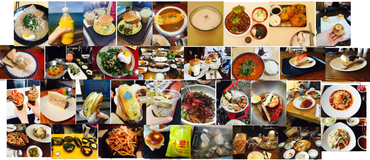
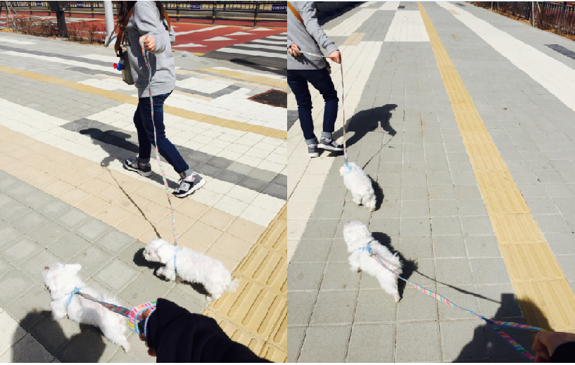
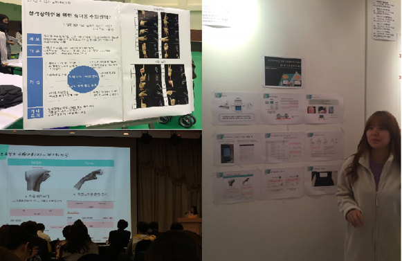
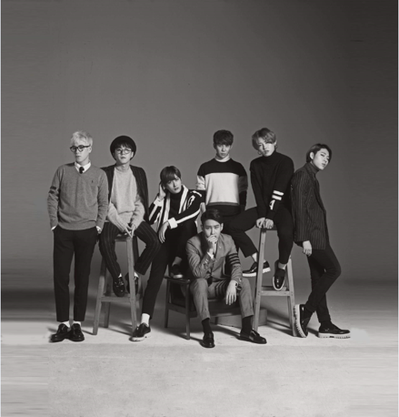

성격: 낯가림이 특히 남자에게 심하고, 초반에는 잘 웃지 않고 말도 없어서 다가가기 힘들다.
그러나 친해지면 유치한거에도 잘 웃고 말도 굉장히 많아서 시끄럽다고 할 정도임.
시간표
주
月
火
水
木
金
1교시 9:00~9:50
웹 프로그래밍
금
2교시 10:00~10:50
작업설계
웹 프로그래밍
오픈소스 HW실습
요
3교시 11:00~11:50
작업설계
오픈소스 HW실습
일
4교시 12:00~12:50
오픈실습 HW실습
웹 프로그래밍
은
5교시 1:00~1:50
작업설계
6교시 2:00~2:50
작업설계
공
7교시 3:00~3:50
컴퓨터 구조
강
8교시 4:00~4:50
컴퓨터 구조
나를 위한 글쓰기
입
9교시 5:00~5:50
컴퓨터 구조
나를 위한 글쓰기
니
야간
다
1교시 6:00~6:50
C 프로그래밍
♥
2교시 6:55~7:45
C 프로그래밍
C 프로그래밍
♥
취미 및 좋아하는 것
맛집 찾아다니기

강아지 안고다니면서 산책하기

노래방 가기
혼자 돌아다니기
하도 혼자 잘돌아다녀서 혼자 놀이공원도 갔다왔다. 나를 찍어줄 사람이 없어서 그냥 놀이기구를 찍기만 했다.
생각하기(잡 생각이 많은 편이라서 한번에 몰아서 생각한다. 그렇다고 잡다한 생각만 하는 것이 아니라,
정말 고민해야될 떄 진지하게 고민하기도 한다.)
IT계열과 관련해서 개발에 흥미를 갖고있음.(소모임 'AtoZ'에 가입하면서 참가한 대회)

아이돌 그룹

놀이공원과 같은 테마파크 가기
말말말
듣기 좋아하는 말-"고마워": 어렸을 때부터 칭찬받는 것을 좋아하다보니 착한 행동을 많이 했다. 그러면서 고맙다는 소리를 듣게 되었는데,
그 말이 내가 배려심을 갖게 해주었다. 친구들을 배려하고 잘 챙겨줬더니 고맙다는 소리를 더 많이 듣게 되었고, 점점 더 좋은 행동을
하게 되었다.
듣기 싫어하는 말-"니가 좀 해줘, 야 불만있냐?": 호의가 계속되면 정말 당연한 건줄 아는 사람이 너무 많은 것같다. 앞서 말했듯이
나는 배려하는 걸 좋아한다. 그래서 늘 양보하는 자세로 생활하는데 처음에는 고맙다고 하다가 이제는 너무 당연하다는 듯이
해달라고 한다. 너무 당황스러워서 되물어보면 아무렇지않게 날 시킨다. 불만있냐는 말은 주로 친언니가 하는 소리인데, 나는 화가 나면
말을 못하고 혼자 삭히는 스타일이다. 말빨이 딸려서 내가 선택한 방법이다. 그래서인지 표정관리가 잘 안되고 입이 자꾸 튀어나온다.
그러면 어떻게 알아차리곤 항상 불만있냐며 물어보는데 그 말이 너무 싫다. 혼자 풀려다가도 더 화가 나기때ㅐ문이다.
희망 직업
과거→연예인(가수), 시인
: 어렸을 때부터 가수들이 춤추고 노래부르는 것을 보고 따라하는 걸 좋아했으며 이쁘다는 소리를 자주들어서 '뿡뿡이 오디션'도 봤었다.
겁이 많아서 아무것도 못하고 나왔던 나는 바로 탈락했지만 이후에 연예인이 되고 싶다는 꿈을 계속 꿨었다.
시인이 되고 싶다고 했을 때는 한창 시를 많이 창작할 때였다. 잘써서 학교 신문에도 종종 올라갔었지만, 수입을 얻기에는 어렵다고 판단을 하여 마음을 접었다.
현재→하드웨어 개발자, 웹디자이너
: 지금은 전공분야를 살리고 싶다는 생각이 강해서 IT기술과 인간공학을 기반으로 한 제품을 디자인하여 인간에게 편리한 제품을 제공하고싶다.
웹디자이너는 생각이 없었는데 웹 프로그래밍 수업을 들으면서 관심이 생겼다.
고민
2학년이 되서 IT응용시스템공학과로 전과를 했더니, 1학년 수업을 들어야되는 상황이 되었다. 1학년 때 배우지 못한 과목이라서 지금 듣는 건
어찌보면 당연한 것이다. 근데 나에겐 어렵다. C언어도 쉽다고 생각했는데, 나만 그런 것이 아닌지 동생들이 너무 잘한다.
그래서 벌써부터 성적이 걱정된다. 웹프로그래밍은 재밌다. 근데 실수해서 오류가 나면 캐치를 잘 못한다. 오픈소스는 내가 민폐다.
C언어 연계과목인데 동시에 배우고있으니,.. 같은 조원분이 매번 다하셔서 죄송하기만 하다. 나도 수업전에 열심히 예습 복습하고 문제도 혼자
풀어보려고 하는데 한번도 혼자 풀어본 적이 없었다.